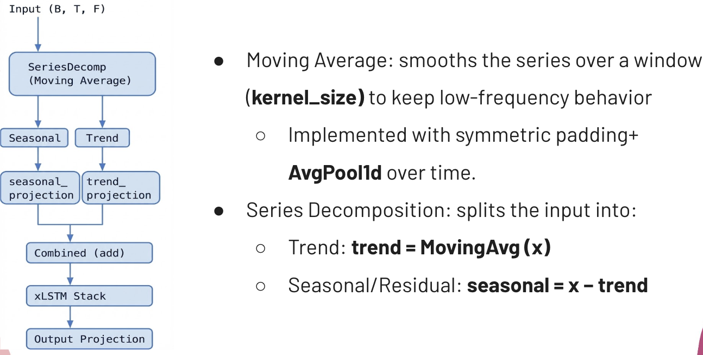
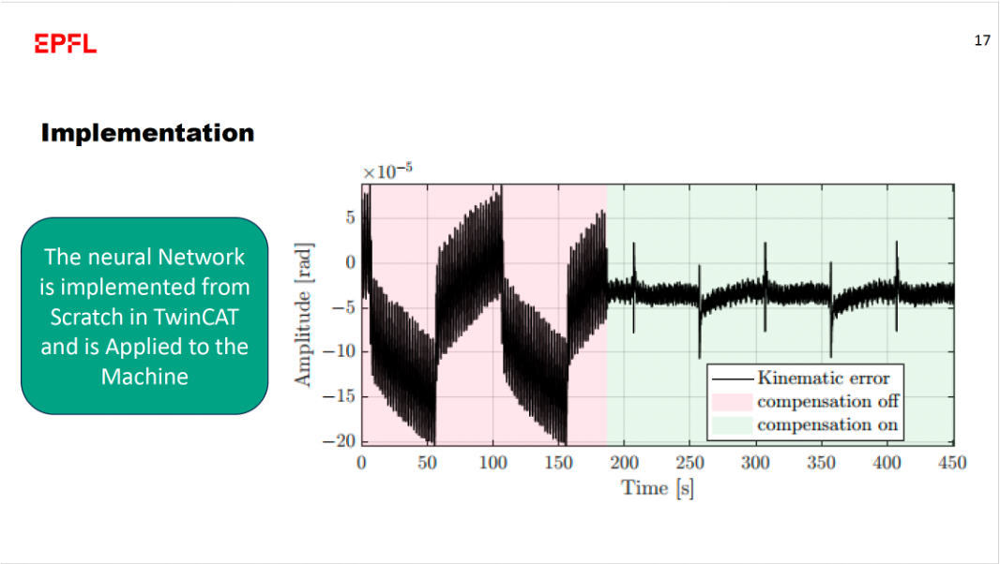
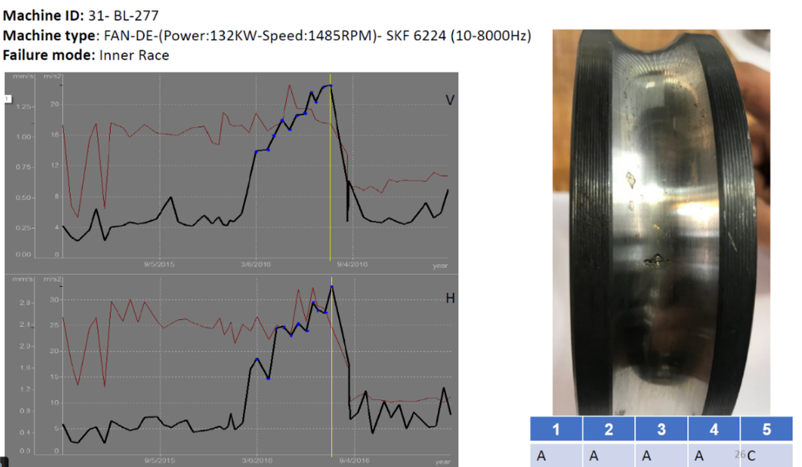
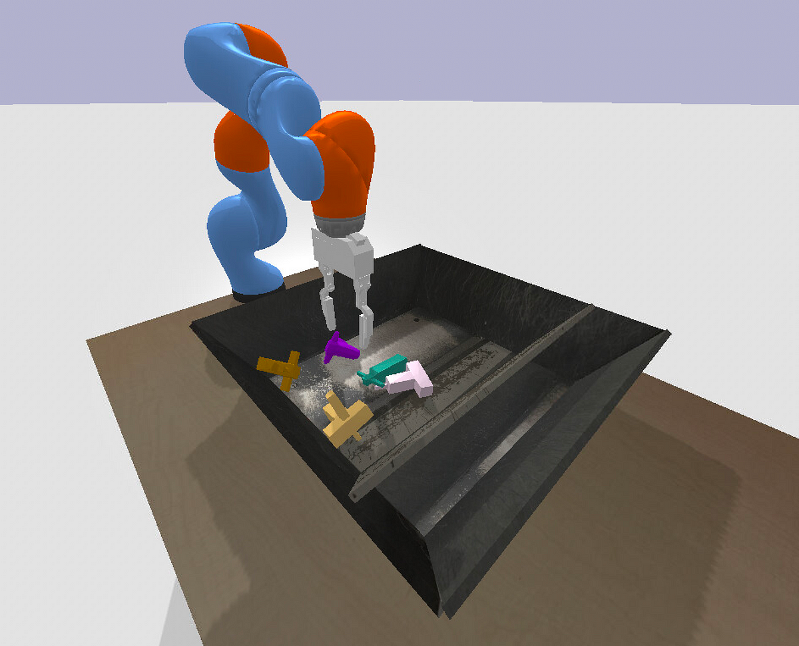

Large-Model Industrial Forecasting
Designed multi-layer Transformer and xLSTM models for long-sequence industrial data forecasting. Mixed-precision training and multi-GPU parallelization for compute efficiency at scale.
Reinforcement Learning · Forecasting · Robotics and Control
AI systems researcher building scalable ML and RL pipelines for forecasting, decision-making, and industrial control — from multi-GPU clusters to production.

I'm an AI systems researcher with an M.Sc. in Electrical & Computer Engineering from the University of Alberta (4.0 GPA), where I focused on reinforcement learning, time-series prediction, and large-model optimization.
I design scalable ML architectures across multi-GPU clusters, integrating model-level and system-level improvements for performance and efficiency. My toolbox spans PyTorch, MLflow, Docker, and cloud platforms — and I'm passionate about advancing AI computing architectures, multimodal optimization, and safe reinforcement learning.
Alberta Machine Intelligence Institute (Amii) · In collaboration with Repsol (Spain)
Applied Control & Diagnosis Lab, University of Alberta
EPFL Excellence in Engineering Program · In collaboration with Hexagon AB — Lausanne, Switzerland
Sharif University of Technology — Tehran, Iran

Designed multi-layer Transformer and xLSTM models for long-sequence industrial data forecasting. Mixed-precision training and multi-GPU parallelization for compute efficiency at scale.
Training an RL agent to control a rotary machine in real-time using a only position data. Agent is learned to construct other states from the trajectory data collocted from the system offline.

Real-time error compensation using neural network-based kinematic error modeling for a robot in metrology applications. Integrated system-level and model-level optimization for faster, more stable control.

Predictive maintenance models using deep learning for vibration-based fault detection and remaining useful life estimation. Improved generalization through data augmentation and precision tuning on hybrid datasets.
LLM-based debugging assistant using OpenAI API and vector retrieval for semantic fault diagnosis in control systems. Multi-modal context retrieval and response generation for domain-specific reasoning tasks.

Applied reward shaping within safe reinforcement learning for a grasping task in the KUKA robotic environment. ARISE 2024 Award Candidate Paper.
Developing the "SafeRL Engine" commercialization initiative.
Switzerland, 2023 — 3% acceptance rate.
Sharif University of Technology, 2022.
Ranked top 0.4% among 200,000 participants, 2018.
I'm open to research collaborations, ML engineering roles, and interesting projects.